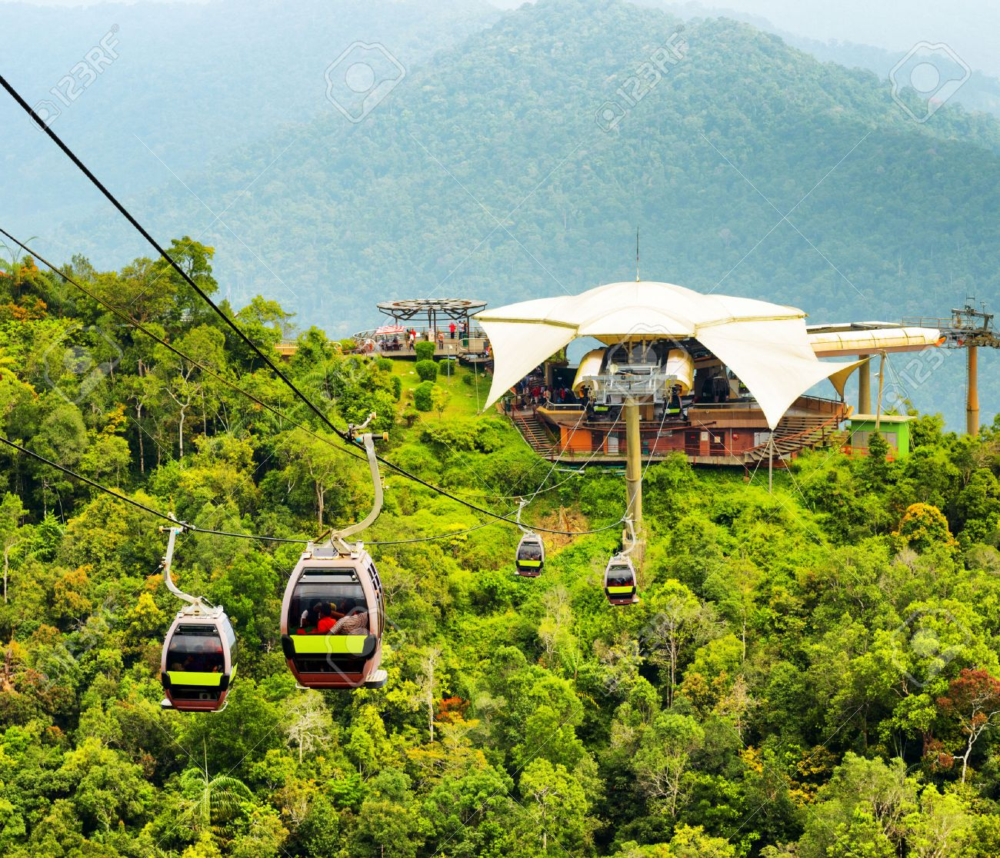

랑카위 케이블카
말레이시아와 태국의 국경에 인접한 안다만 해 근경을 케이블카로 도하하는 낭만
랑카위의 북쪽으로 몇 킬로미터 떨어진 곳에는 태국의 코 타루타오 섬이 있다. 랑카위에서 가장 높은 곳은 랑카위 섬 중동부의 구눙 라야(말레이어: Gunung Raya)로, 해발 890 m이다. 산호초에 둘러싸인 초록색의 맑은 바다와 해변의 백사장, 망글로브 숲으로 우거진 늪지대, 그리고 정글의 산악지대를 고루 갖추고 있어 지상 낙원이라고 경탄하는 사람들이 많다. 1980년대 중반부터 말레이시아 정부가 엄격한 환경보전 관리하에 개발하고 있어 오염에 찌들지 않은 말레이시아 유일의 섬으로 남았다. 최근에 한국에도 이 섬이 널리 알려지면서 신혼여행지로 인기를 끌고 있는 곳이기도 하다.